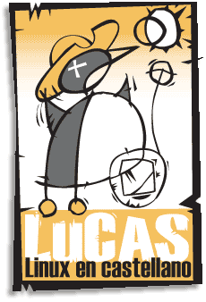
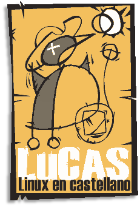
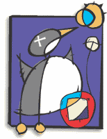
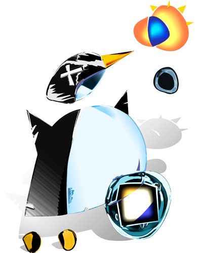
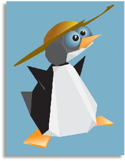
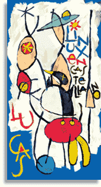
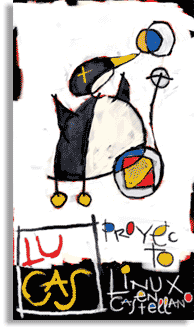

Galería de Mascotas
Esta galería se irá actualizando hasta que se haya decidido la mascota definitiva de LuCAS Hispalinux. ¿Quieres colaborar?
   
  
Volver a
home
(k) Newbie, julio-agosto 2001